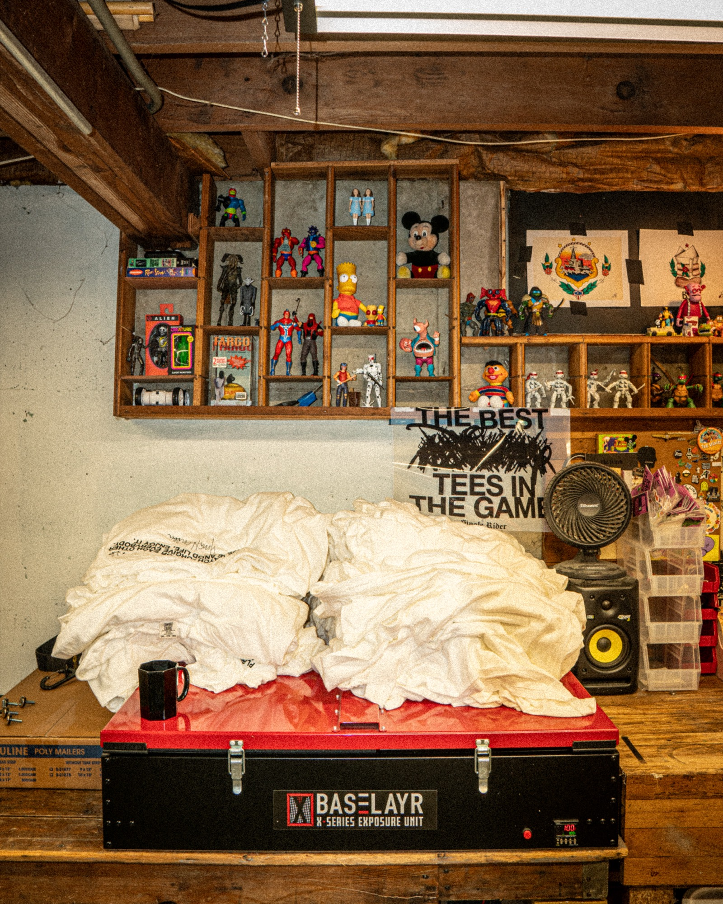
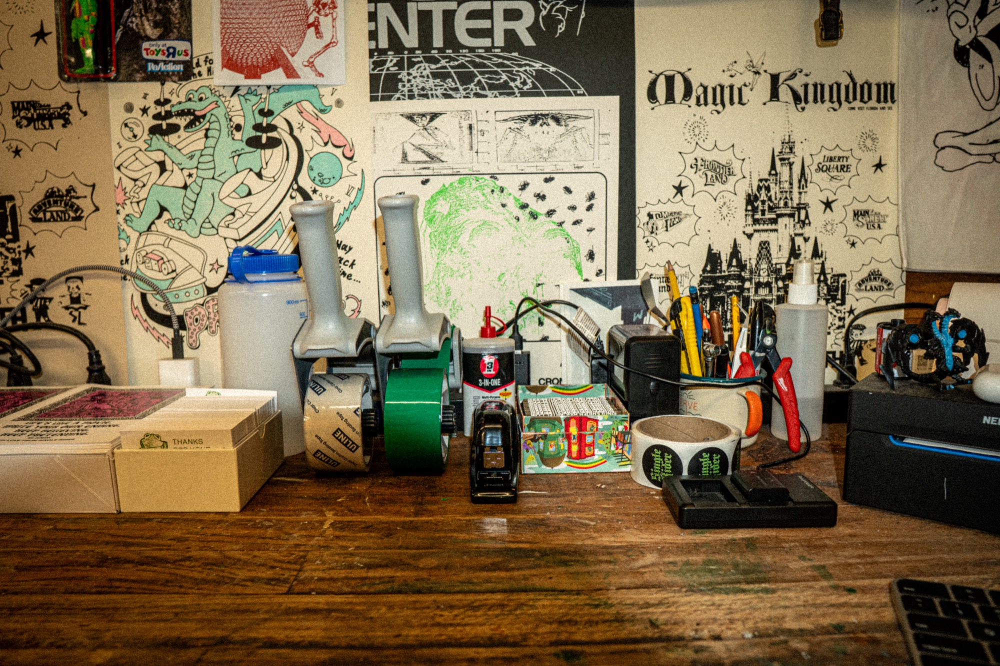
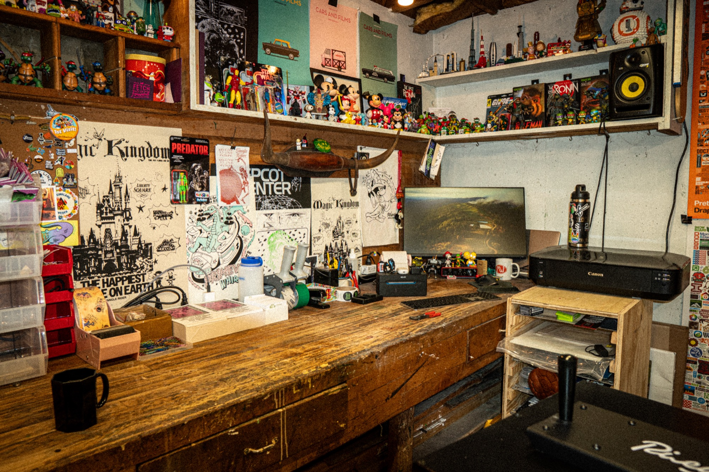

The short version: Screen printing needs high-resolution files (300 DPI minimum), separated by color, with text converted to outlines. Vector files work best. If that made no sense — don't worry, we'll walk through it step by step.
File Formats That Actually Work
Not all file types are created equal when it comes to screen printing. Here's the hierarchy:
Best: Vector Files (AI, EPS, PDF)
Vector files scale to any size without losing quality. A 2-inch logo becomes a 20-inch back print with zero loss in clarity. Use for logos, text-heavy designs, illustrations, geometric shapes, and line art.
If you're hiring a designer, ask for an Adobe Illustrator (.AI) file with fonts converted to outlines and all colors set to spot colors. This is the gold standard for screen printing.

Good: High-Resolution Raster Files (PSD, PNG)
Raster files are made of pixels. The critical requirement: 300 DPI at actual print size. A 72 DPI image from a website will look pixelated when printed. Use for photographic elements, complex artwork with textures.
Avoid: JPG, Low-Res Images, Word/PowerPoint Files
JPG files are compressed and lose quality. Images from websites are usually 72 DPI — too low. Word/PowerPoint files aren't designed for print production and convert poorly.
Send us what you have. If your file won't work, we'll let you know what needs fixing. We'd rather help you get it right than reject your order later.
Resolution & Size Requirements
Resolution depends on size. A 3" × 3" logo at 300 DPI looks great at 3 inches. Blow it up to 12" × 12" and you now have a 75 DPI image — pixelated and unusable.
If your design prints at 12" × 14": 12 × 300 DPI = 3,600 pixels wide. 14 × 300 DPI = 4,200 pixels tall. Your file needs to be at least 3,600 × 4,200 pixels.
Common Print Sizes
| Location | Typical Size | Minimum Pixels (at 300 DPI) |
|---|---|---|
| Left Chest | 3.5" × 3.5" | 1,050 × 1,050 px |
| Full Front | 12" × 14" | 3,600 × 4,200 px |
| Full Back | 13" × 16" | 3,900 × 4,800 px |
| Jumbo Print | 17" × 23" | 5,100 × 6,900 px |
Creating a logo at 4" × 4", then scaling it up to 14" × 14" in your design software. The software shows it smooth, but the printer sees a low-res mess. Always create or work at actual print size.
Color Modes & Separation

This is where screen printing gets technical — but stick with me, because understanding this will save you money and get better results.
Spot Colors (What Screen Printers Want)
Screen printing works by layering one color at a time. Each color = one screen = one pass through the press. Each color should be on its own layer. Use Pantone colors when possible for exact color matching.
CMYK vs RGB
CMYK is the standard for print. RGB is for screens and colors can shift when converted to inks. If you're using spot colors (recommended), this matters less. We'll proof everything — what you see in the mockup is what you'll get.
Gradients & Halftones
Simple gradients (blue to white) work fine. Complex multi-color blends are harder — screen printing isn't built for photo-realistic color blends. If your design has gradients, send it over and we'll tell you if it'll work.
Dark Garments: The Hidden Color
Printing on dark shirts requires an underbase — a layer of white ink printed first so your colors don't disappear into the fabric. A 2-color design on dark = 3 colors total (white + your 2 colors). This affects pricing.
Design Tip: We can knock out areas and let the shirt color show through as part of the design. Ask us about this — it can save you a color.
What to Avoid (Common Deal-Breakers)
Too many colors: Stick to 6 or fewer. Beyond that, prints get expensive and colors can look muddy.
Tiny text: Minimum 8pt. Script fonts need 10-12pt minimum or thin strokes fill in.
Super fine lines: Minimum 1pt thickness. Thinner lines break up or don't hold ink.
Unlicensed content: We can't print copyrighted material without permission — no Google/Pinterest images, brand logos, or commercial fonts you don't own.
Pre-Flight Checklist: Is Your Artwork Ready?
✓ Artwork Readiness Checklist
What Happens After You Submit
- File Review (1-2 business days): We check your files for print-readiness.
- Digital Mockup: We show exactly how your design will look on the garment.
- Your Approval: You review and approve the mockup before production.
- Screen Prep & Printing (2-3 weeks): We create screens, mix inks, and run your order.
- Quality Check & Ship: Every piece is inspected before shipping.
Not sure if your files will work? Send them over before placing an order. We'll review for free and let you know what needs adjusting. Email info@cowdogprint.co or submit through our quote form.
Ready to Get Your Artwork Reviewed?
Send us your files and we'll let you know if they're print-ready — or what needs adjusting. Free review, no obligation.